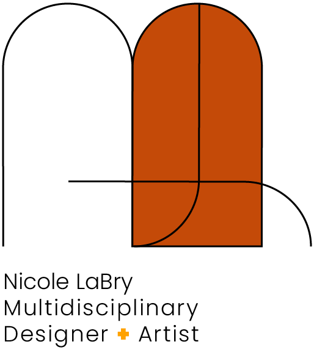
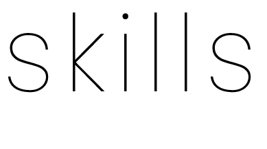

hard skills
Photoshop
•••••
Illustrator
•••••
InDesign
•••••
Procreate
•••••
Figma
••••
Miro
••••
Adobe XD
••••
GitHub
•
HTML
••
CSS
••
Color Theory
•••••
Typography
•••••
Composition
•••••
soft skills
Empathy
•••••
Curiosity
•••••
Tenacity
•••••
Communication
•••••
Collaboration
•••••

user research
Considering manifold perspectives when conducting research is paramount. Many platforms exist solely to connect disparate user bases with diverse needs. Hearing from all sides allows for triangulation of solutions for the benefit of all.
user empathy
Helping others feels natural and gratifying. Being able to identify seemingly minute aesthetic details, such as contrast and accessibility, puts to work my own inner color theorist in the interest of all end users.
interviews
Offbeat icebreakers and open-ended questions make for unique solutions. Giving people the opportunity to answer “What is sparking joy for you this week?” is one of my favorite ways to gain insight into their motivations.